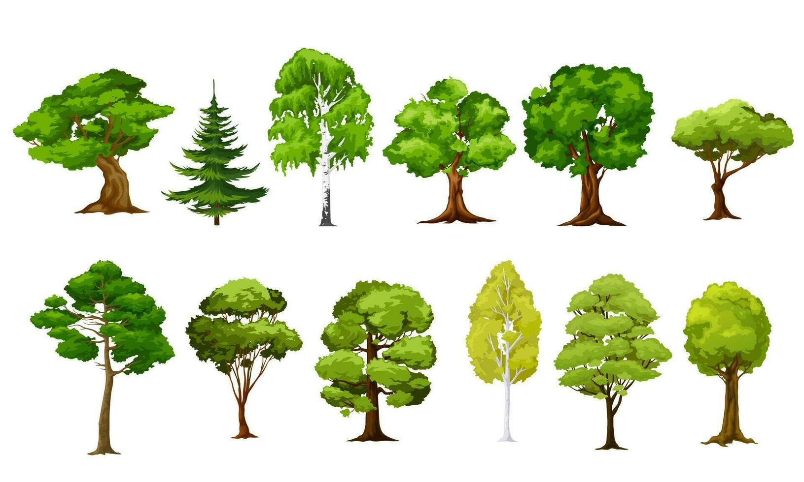
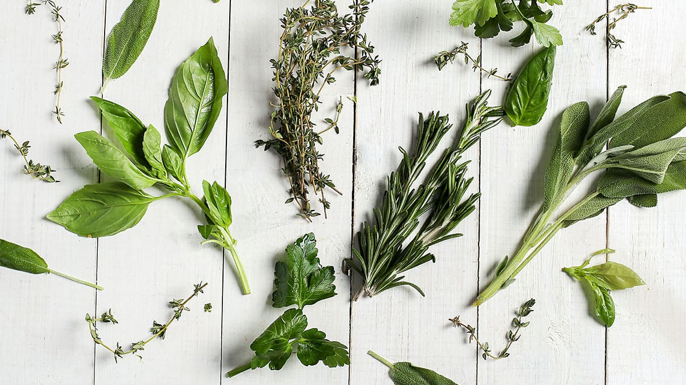
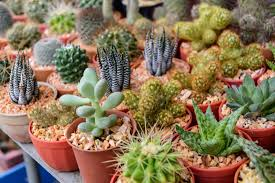
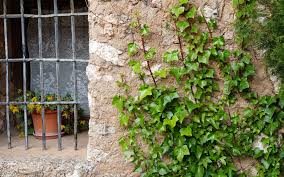
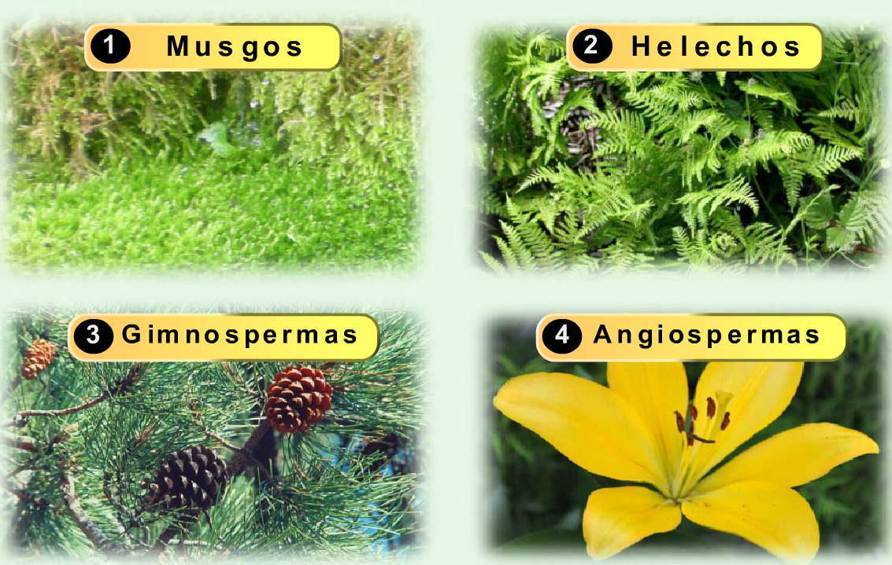
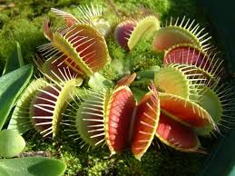
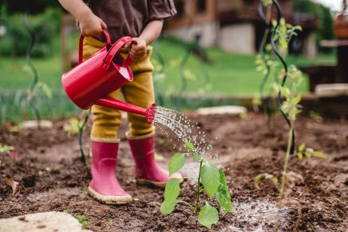
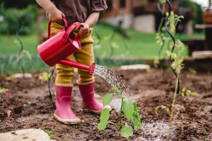

TIPOS DE PLANTAS
La clasificacion segun el habito de crecimiento es la mas popular e inclusiva.
| PLANTA | IMAGEN |
|---|---|
| Arboles Empecemos por los mas grandes. Los troncos de los arboles pueden alcanzar hasta 116 metros (las secuoyas). El tronco crece hasta una altura antes de ramificarse y formar una copa. Ademas, los arboles son perennes. Existen especies como el pino longevo (Pinus longaeva) y el abeto de Santa Lucía (Abies bristlecone), que pueden superar 5000 años de edad. El arbol nacional de Mexico es el ahuehuete, o el arbol del Tule. Puede alcanzar hasta 40 metros de altura y vivir durante miles de anos. Tambein es reconocido por su contribucion al ecosistema: el ahuehuete proporciona un refugio para una variedad de aves y otros animales. |
 |
| Arbustos Los arbustos son plantas lenosas perennes. Se reproducen mediante semillas o brotes del sistema radicular. Suelen tener varios tallos principales y son mas pequenos que los arboles, miden de 1 a 3 metros de altura. Son capaces de sobrevivir en condiciones demasiado dificiles para los arboles, por ejemplo, en las laderas de las montanas o en los bordes de los desiertos. Un ejemplo de esta clase es la murtilla. No solo decora jardines chilenos con sus flores preciosas, sino tambien produce frutas perfectas para cocinar mermeladas. |

|
| Hierbas Son plantas bajas y no lenosas, es decir, sus tallos y ramas son suaves y flexibles. Su altura varía de milimetros a un metro. Desempenan un papel crucial en la cadena alimenticia, ya que forman pastos y forrajes para muchos animales. A veces las cosas mas pequeñas son las mas poderosas. Por ejemplo, la hierba de la víbora (Zornia) se usa comunmente en America Latina para curar las mordeduras de serpientes. |
 |
| Plantas suculentas Son capaces de adaptarse a los entornos mas secos del mundo. Almacenan agua en sus hojas, tallos o raices para sobrevivir en condiciones insoportables para otras plantas. Un ejemplo de esta clase es la Echeveria elegans, tambien conocida como rosa de alabastro, ya que la forma de su roseta es similar a una flor. Su tolerancia a la sequía y capacidad de prosperar con un cuidado minimo la hacen perfecta para los jardineros principiantes y expertos. |
 |
| Plantas trepadoras Las trepadoras adoptaron una estrategia de vida interesante. En vez de gastar su energia en desarrollar sus propios sistemas de apoyo, se sostienen en otras plantas o estructuras para alcanzar la luz solar. Se reproducen por semillas y juegan un papel vital en la creacion de zonas sombreadas. Crecen a una velocidad sorprendente y pueden cubrir grandes areas. Por ejemplo, la Luffa cylindrica, conocida comunmente como estropajo, esponja vegetal o calabaza de esponja, puede crecer hasta 1.5 metros en un mes. La Pasionaria, o la flor de la pasion, es una enredadera que abraza a todo en su camino. Su fruto, el maracuya, ademas de ser un placer para el paladar, agrega un toque exotico al jardin. |
 |
| Higuerones, helechos, musgos y hepaticas Estas plantas no siguen el ciclo de crecimiento estandar. En lugar de producir flores y semillas, se reproducen mediante esporas. Los helechos destacan con frondas altas y delicadas, mientras que los musgos y hepaticas son más discretos. Se esconden en los bosques, entre las rocas o sobre los troncos de los arboles. Los musgos juegan un papel vital en los ecosistemas: actuan como esponjas naturales, ayudando a absorber y retener agua. Los musgos han sido usados como vendajes en situaciones de emergencia debido a su capacidad de absorcion. El Bryum argenteum o el musgo plateado es el ejemplo mas comun de esta clase. |
 |
| Plantas insectivoras Estas plantas han evolucionado para atrapar y digerir insectos. Este enfoque alimenticio les permite sobrevivir en suelos pobres, sin suficientes nutrientes. Ademas, tienen un papel importante en el control de plagas en su ecosistema. Al mencionar la clase de plantas insectivoras, inmediatamente pensamos en la Venus atrapamoscas con sus trampas de mandibula. Sin embargo, hay muchas otras plantas insectivoras. La Nepenthes, tambien conocida como planta jarra o copa de mono, atrapa a los insectos con un líquido que se produce dentro de una “jarra” formada de una hoja modificada. Las hojas de la Drosera, que tambien se llama rocío del sol, producen secreciones ricas en azucares y pegajosas que atraen a los insectos. |
 |
 
